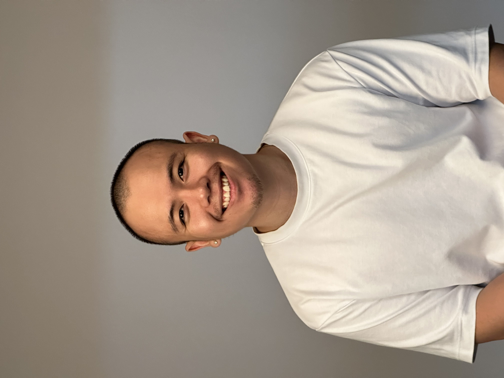

The Office (my favourite show)
Star Wars
Netflix documentaries
Sneakers
Stargazing
Hello again!
My name is Timothy and I design and create things (most of the time)
I'm Timothy Nguyen, an aspiring UX and UI designer from Sydney. I graduated from the University of Sydney with a Bachelor of Design Computing. I love seeking new solutions to improve the lives of others through design. I aim to design innovative products and create better experiences for others.
I chose this degree because I love technology and how it aims to always make our lives easier. Funnily, I inititally studied Computer Science my first year of univeristy but realised it wasn't for me and saw an opportunity to learn Design Computing.
Some things I enjoy:
Check out my Resume or LinkedIn, and feel free to reach out, I'd love to chat!